Die Koffer sind verladen, Julius verabschiedet und das Sicherheitspersonal hat gründlich unser Handgepäck durchsucht – auf geht's nach Japan! Wir fliegen über München, wo wir kaum Aufenthalt haben, uns aber trotzdem vor den drei kleinen Kindern am Gate fürchten. Der Flug verläuft dennoch ruhig und dadurch, dass wir "nachts" fliegen, kommen wir morgens in Tokio an.
Die Freude hält aber nur kurz, denn wir bleiben gar nicht dort. Alles, was wir im Landeanflug auf die Mega-Stadt sehen – den Tokyo Tower, die Hochhäuser, die Gärten und Vergnügungsparks – werden wir erst in zwei Wochen betreten. Stattdessen sprinten wir vom Gate zu unserem Anschlussflug. Gestartet wird nämlich auf der südlichsten Hauptinsel Japans, Kyushu. Um genau zu sein sogar ganz im Süden der Insel, in der Stadt Kagoshima.
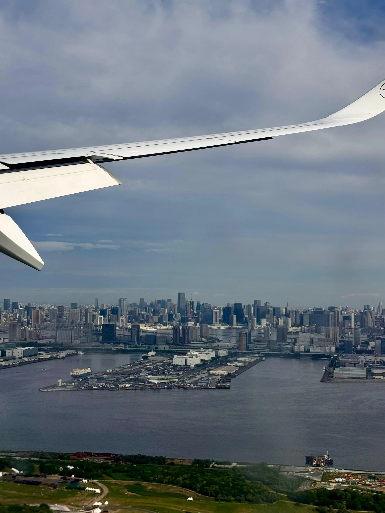
Die Stadt hat sich rund um Japans aktivsten Vulkan gebildet, den Sakurajima. Trotz der Nähe zu diesem rauchenden Schlund haben sich hier beinahe 600.000 Menschen niedergelassen. Die Anreise ist trotzdem stressiger als die sechzehn Stunden Flug davor, denn der Flughafen Haneda ist riesig und die Busse, die einen von A nach B bringen, sind langsam. Das Personal hilft uns dabei, unsere Koffer erneut aufzugeben und den richtigen zweiten Security-Check zu finden. Gerade so schaffen wir es.
Vollkommen übermüdet landen wir schließlich in Kagoshima. Während Tokio noch sehr international war und alles voller Gaijins, also Ausländer, ist, wirkt hier kaum noch etwas auf Touristen ausgelegt. Englische Schilder? Fehlanzeige. Immerhin gibt es hier und da Beschriftungen in römischen Schriftzeichen. Die Menschen sind aber unglaublich freundlich und helfen uns sofort dabei, den Bus in die Stadt zu finden.
Vorbei geht es an dicht bewachsenen Bergen, die mich an die in Thailand erinnern. Die Straßen sind von Palmen gesäumt. Schnell merken wir: Das ist ein komplett anderes Japan als das, das wir im letzten Jahr kennengelernt haben.
Wir zurren unsere Koffer die paar Meter bis zum Hotel. Es ist noch zu früh zum Einchecken, also nutzen wir die Zeit und schlendern halb in Trance durch die Einkaufspassage direkt gegenüber. Praktisch.
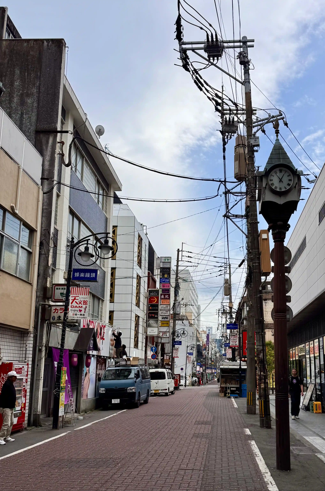
Alles dort ist eine einzige Reizüberflutung – vor allem akustisch. Werbung läuft über Lautsprecher im Wechsel mit Popmusik, irgendwo werden die Zahlen eines Bingo-Spiels vorgelesen. Wir kämpfen uns durch das Stimmengewirr bis zum ersten 7-Eleven, unserem persönlichen Heiligtum für die nächsten zwei Wochen.
Ein conbini, also ein japanischer Convenience Store, in dem man einfach alles bekommt: Snacks, Alkohol, Mittagessen, Kosmetik, Kleidung – und Bargeld. Nachdem wir ausreichend Geld abgehoben haben, steuern wir direkt den ersten Gacha-Automaten an.
Diese Automaten stehen gefühlt vor jedem Laden oder in eigenen Bereichen von Einkaufszentren. Das Prinzip ist ähnlich wie bei einem Kaugummiautomaten: Man wirft 400 Yen (etwa 2,30 €) ein und bekommt statt einer Süßigkeit eine Plastikkugel. Darin befindet sich eine kleine Überraschung zu einem bestimmten Thema. Es gibt Gachas mit Hundefiguren, Anime-Charakteren, Automodellen und eigentlich allem, was man sich vorstellen kann.
Ein kleines bisschen Glücksspiel gehört natürlich dazu, denn auswählen kann man nichts. Wer genau die Figur haben möchte, die ihm gefällt, muss eben mehrfach am kleinen Rädchen drehen. Bei uns werden es ein kleiner Otter und ein Wellensittich, der sogar leuchten kann.
Da wir immer noch ziemlich weggeklatscht sind, schlendern wir zwar durch die kleinen Läden im Einkaufszentrum, entscheiden uns dann aber irgendwann dafür, einfach Mittag essen zu gehen und anschließend ins Hotel zurückzukehren.
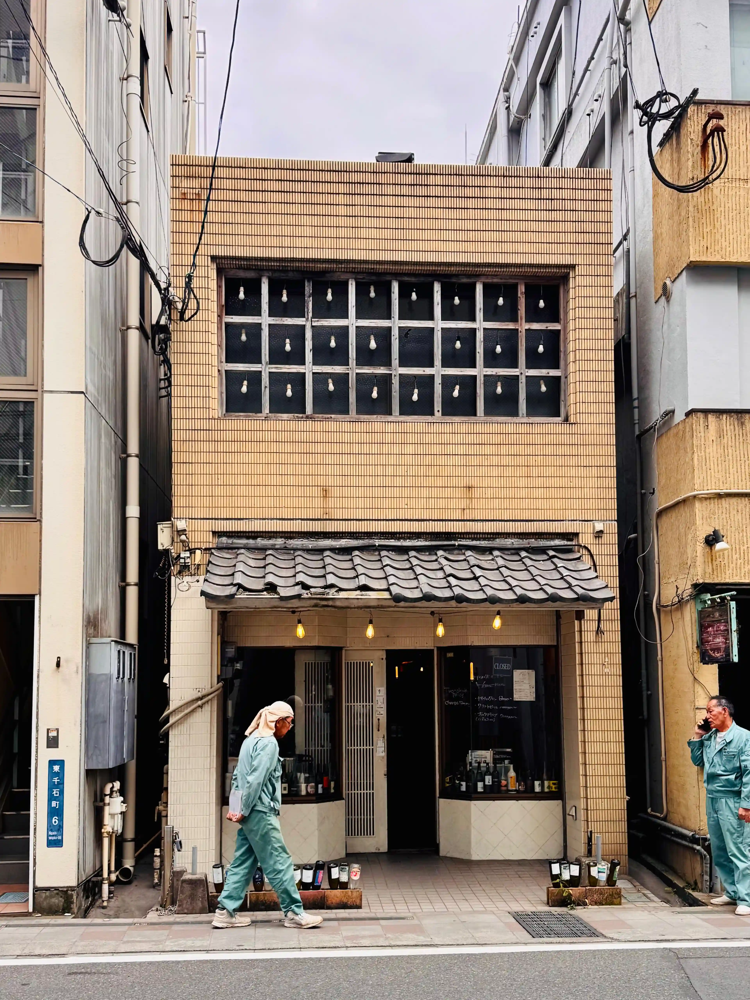
Natürlich starten wir direkt mit einer Ramen-Suppe. Zur Auswahl stehen lediglich die Portionsgröße und verschiedene Extras – die eigentliche Suppe ist immer dieselbe.
Wir setzen uns an die Theke und beobachten den Köchinnen dabei, wie sie routiniert eine Schüssel nach der anderen zubereiten. Wie in Japan üblich, dauert es nicht lange, bis unser Essen vor uns steht: zwei riesige Schüsseln mit Brühe, dicken Nudeln, Fleisch und einem weich gekochten Ei.
Als Besteck gibt es natürlich nur Stäbchen. Mama kämpft allerdings nicht lange damit, denn die aufmerksame Bedienung bringt ihr kurzerhand eine Gabel.
Aha, denke ich. Also kennt sie das von Touristen schon.
Immerhin kann Mama ihre Nudeln jetzt essen und muss nicht nur die Suppe schlürfen.
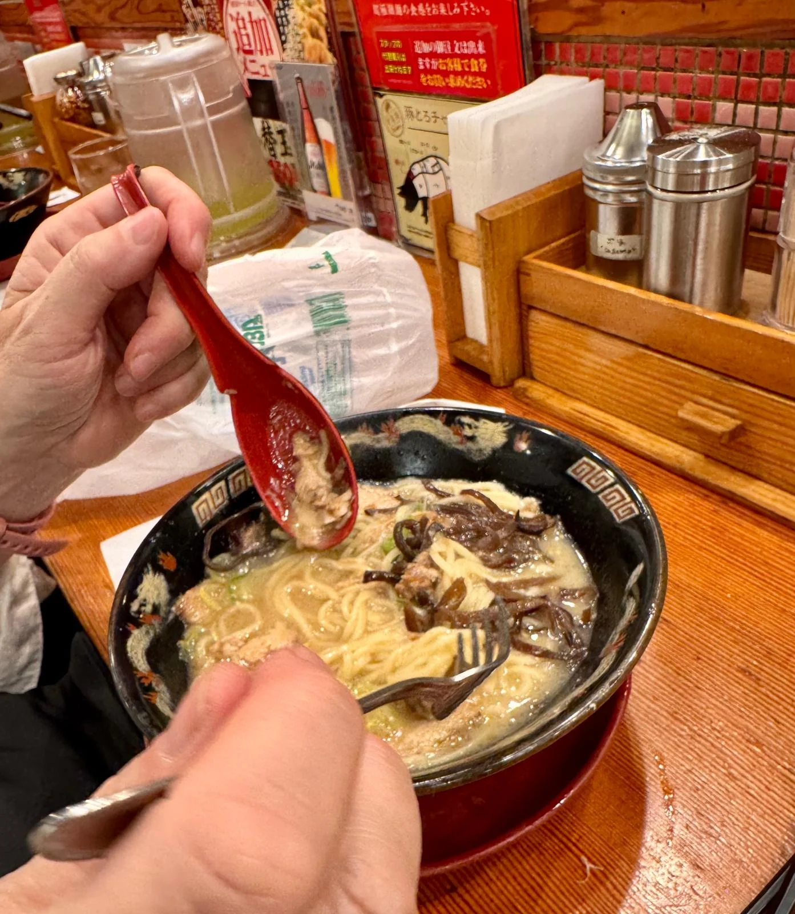
Direkt nach dem Essen stehen wir wieder auf. Verweilt wird hier nämlich nicht. Man isst, bedankt sich und geht. Das kommt uns allerdings sehr gelegen, denn endlich können wir unser – sehr kleines, aber modernes – Hotelzimmer beziehen.
Es dauert nicht lange, bis wir in einen komatösen Mittagsschlaf fallen. Genau so, wie man es bei einem Jetlag eigentlich nicht machen soll. Dank meines Weckers schaffen wir es aber immerhin, noch vor dem Abend wieder aufzuwachen, auch wenn Mama darüber nicht besonders begeistert ist.
Wir ziehen uns um und machen uns noch einmal auf den Weg. Zwanzig Minuten laufen wir an den Schienen der knuffigen Straßenbahn entlang, bis wir den Hafen erreichen. Vor uns liegt die Bucht und dahinter erhebt sich majestätisch der Sakurajima.
Der Vulkan bricht mehrfach täglich aus und wir haben unglaubliches Glück: Genau in dem Moment, als wir ankommen, höre ich einen lauten Knall. Eine riesige dunkle Rauchwolke steigt in den Himmel. Ein ziemlich befremdlicher Anblick.
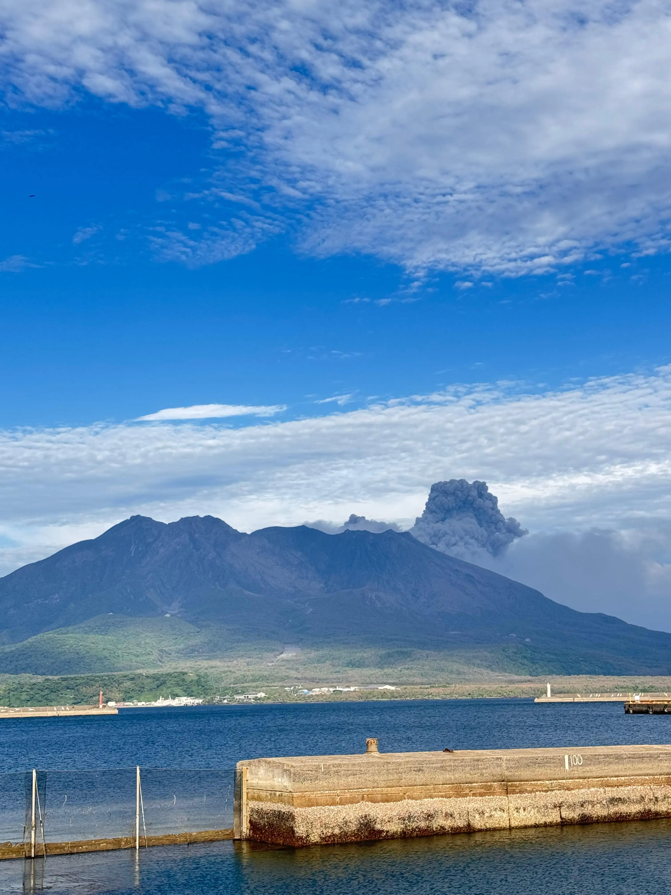
Erst später erfahren wir, dass das bereits ein größerer Ausbruch war. Der letzte mit Todesopfern liegt allerdings über hundert Jahre zurück, nämlich im Jahr 1914. Der letzte größere Ausbruch ereignete sich 2016. Wirklich beunruhigt sind wir deshalb nicht.
Im Gegenteil: Wir nehmen sogar die Fähre hinüber zum Fuß des Vulkans. Dort leben trotz der regelmäßigen Ausbrüche bis heute Menschen.
Während der zwanzigminütigen Überfahrt, die wir uns hauptsächlich mit Pendlern und Schulkindern teilen, genießen wir den Blick auf den Vulkan und Kagoshima auf der anderen Seite der Bucht. Wir sind aufgeregt, auch wenn wir noch gar nicht richtig realisieren, dass wir tatsächlich in Japan sind.
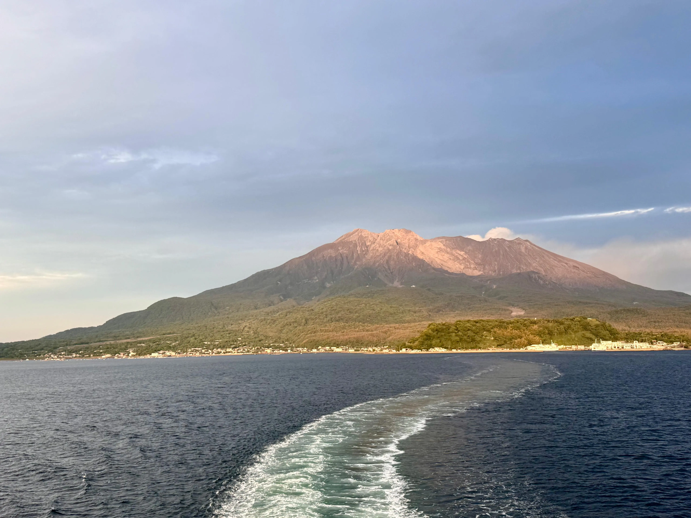
Auf der anderen Seite angekommen, besichtigen wir unseren ersten Tempel. Wir sind fast alleine dort. Bambus und Bäume wuchern bis in das Gelände hinein, Segenssprüche und Papierstreifen wehen sanft im Wind. Eine Krähe erzählt uns lautstark irgendetwas, während wir die Stufen zu einem kleinen Aussichtspunkt hinaufsteigen.
Von hier oben wirkt der Sakurajima plötzlich gar nicht mehr wie ein aktiver Vulkan, sondern einfach wie ein friedlicher, bewaldeter Berg.
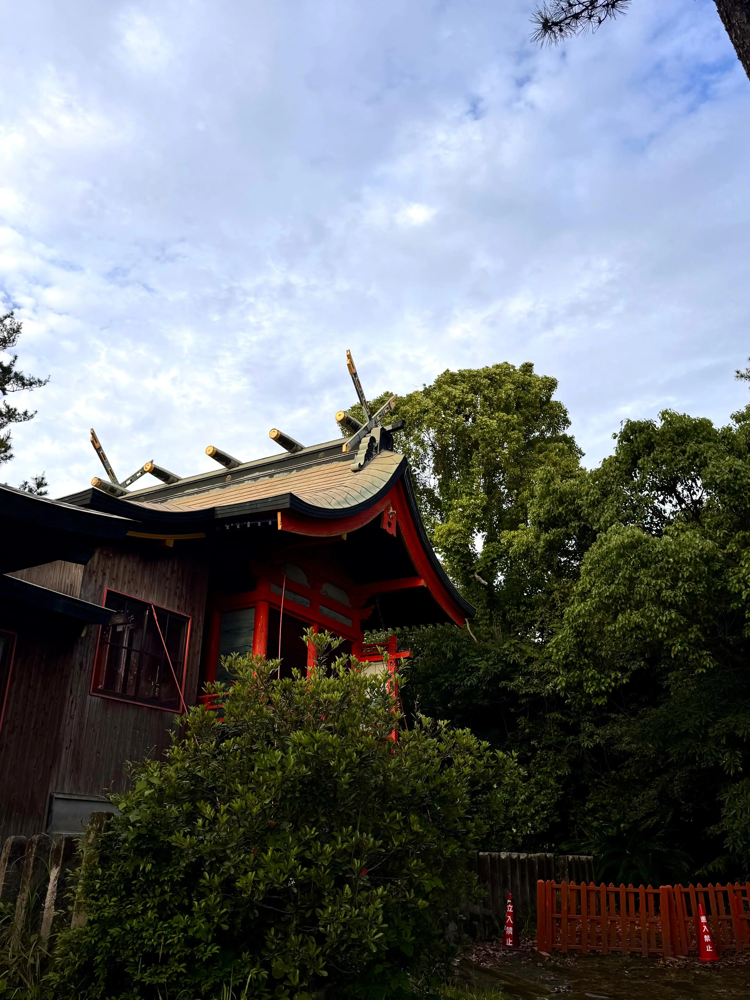
Auf dem Rückweg zur Fähre laufen wir durch verlassene Straßen und kommen an einem FamilyMart vorbei – einem weiteren conbini. Ich hole mir eine Flasche warmen Tee, die hier in jedem Laden direkt neben den gekühlten Getränken steht. Die Rückfahrt ist ziemlich windig, wird aber mit einem wunderschönen Sonnenuntergang belohnt.
Als kleines Abendessen holen wir uns auf dem Rückweg Takoyaki – kleine Oktopusbällchen aus Teig – bei einem unglaublich lieben, sehr alten Mann.
Mama verschwindet anschließend direkt ins Hotelzimmer, aber ich nutze die Gelegenheit, dass sich ein Don Quijote, oder kurz Donki, direkt gegenüber befindet, und stürze mich noch einmal freiwillig in die Reizüberflutung.
Ich kenne den Laden bereits von meinem letzten Japanbesuch (den ich leider nie dokumentiert habe und mich heute noch darüber ärgere) und auch aus Thailand. Trotzdem bin ich erneut völlig überwältigt von der Fülle an blinkenden Lichtern, Reklametafeln, Musik und Lautsprecherdurchsagen.
Eigentlich möchte ich "nur kurz" einen Badezusatz für die Hotelbadewanne kaufen. Vierzig Minuten später finde ich endlich den Ausgang wieder.
Nach diesem Erlebnis fühlt sich das tägliche Bad in dem Badezimmer mit Blick über die Stadt – na gut, und auf den Rest des Hotelzimmers, weil die Wand komplett aus Glas besteht – gleich noch ein kleines bisschen besser an.
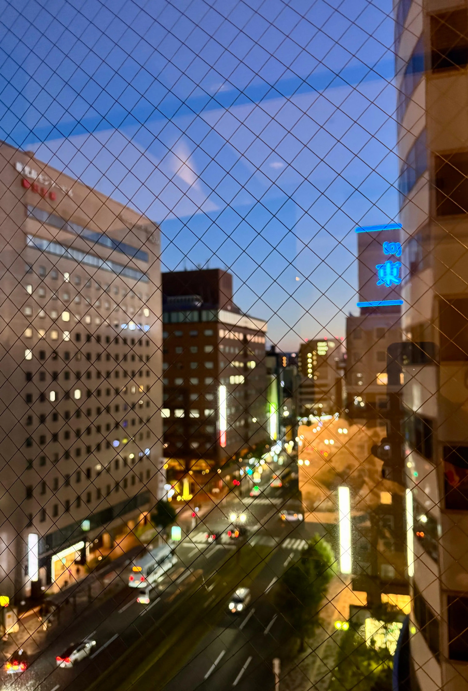
Am nächsten Tag schlafen wir erst einmal richtig aus – bis 7 Uhr. Mit einem kleinen Frühstück aus dem 7-Eleven genießen wir den Blick auf die Hauptstraße Kagoshimas. Unten tuckelt die süße Straßenbahn zwischen den Autos entlang, während wir den wenigen Daheimgebliebenen schreiben, die zu dieser Uhrzeit noch wach sind.
Heute besuchen wir den Sengan-en, eine der berühmtesten Gartenanlagen Japans. Wobei ich inzwischen das Gefühl habe, dass jede Stadt mindestens einen dieser "drei schönsten Gärten Japans" besitzt. Dieser hier ist aber tatsächlich etwas Besonderes.
Denn wo andere japanische Gärten einen künstlich angelegten Berg und Teich als Hintergrund nutzen, dient hier die Bucht mitsamt dem Sakurajima als natürliche Kulisse.
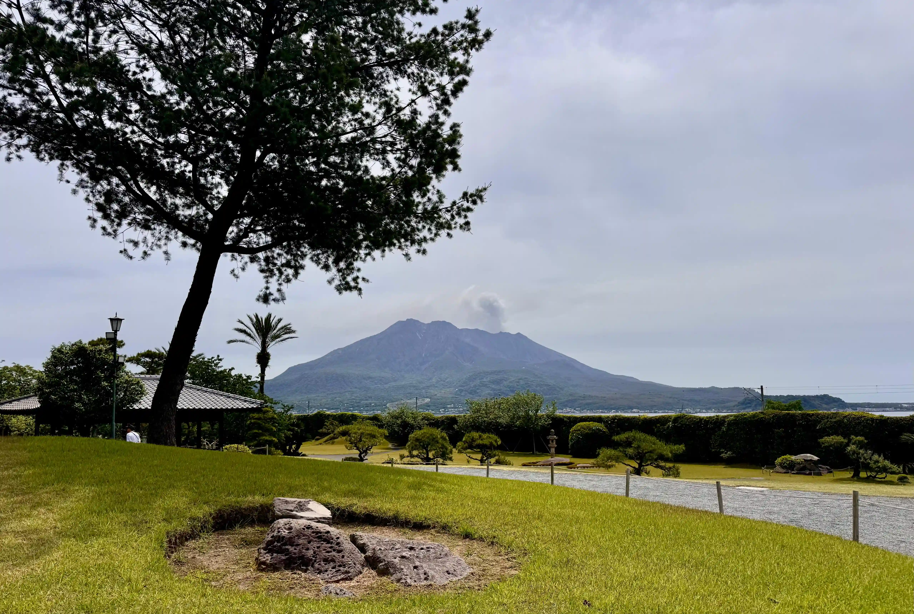
Neben einem kleinen Souvenirshop und mehreren Cafés schlendern wir durch die weitläufige Anlage und bewundern die kunstvoll gestutzten Bäume, Wiesen und Büsche. In der Mitte des Gartens steht ein altes Herrenhaus, das man sogar besichtigen kann.
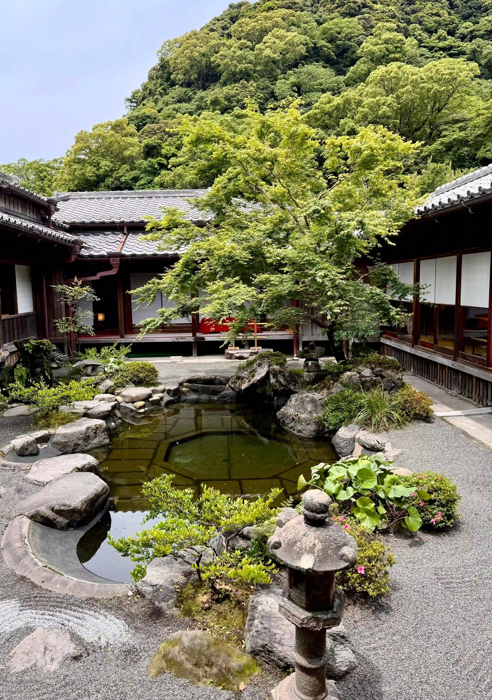
Wir ziehen unsere Schuhe aus und laufen durch das verwinkelte Gebäude im traditionellen Baustil. Die Tatami-Matten geben bei jedem Schritt leicht nach und durch die Türen aus Reispapier fällt sanft das Sonnenlicht. Im Innenhof liegt ein kleiner Teich, umgeben von üppigen Pflanzen – fast wie ein Miniatur-Zen-Garten. Die Außenwände bestehen größtenteils aus Schiebetüren, die je nach Wetter geöffnet oder geschlossen werden können und immer wieder den Blick auf den Garten und den mächtigen Sakurajima freigeben.
Später gönnen wir uns eine kleine Pause mit Erdbeer-Schokolade und Tee. Währenddessen beobachten wir zwei schwarz-blaue Geckos und einen riesigen Schmetterling, der durch den Bambuswald am Rand der Anlage flattert. Moos bedeckt den Boden und irgendwo zwischen den Bäumen versteckt sich ein kleiner Katzenschrein, der bei den Touristen natürlich ein beliebtes Fotomotiv ist.
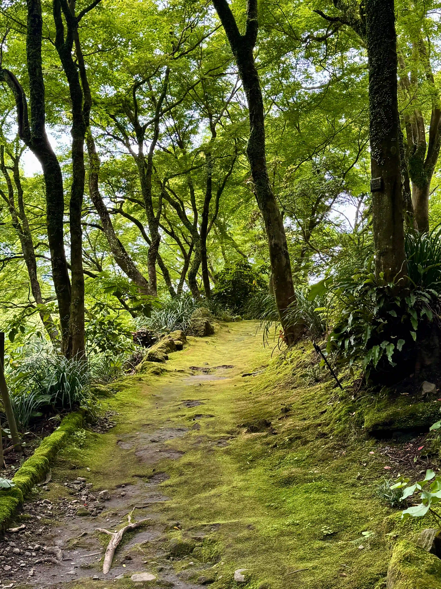
Zum Mittag beschließen wir, dass wir schließlich nur einmal hier sind und uns deshalb ruhig ein etwas teureres Essen im parkeigenen Restaurant gönnen können. Wobei "etwas teurer" in Japan oft einfach nur deutsche Preise bedeutet.
Mit Blick auf den Vulkan bekommen wir eine riesige Auswahl traditioneller Gerichte serviert: Suppe mit Yuzu, verschiedene Beilagen, Fisch und Ei für mich und knusprig frittiertes Hühnchen auf Reis für Mama.
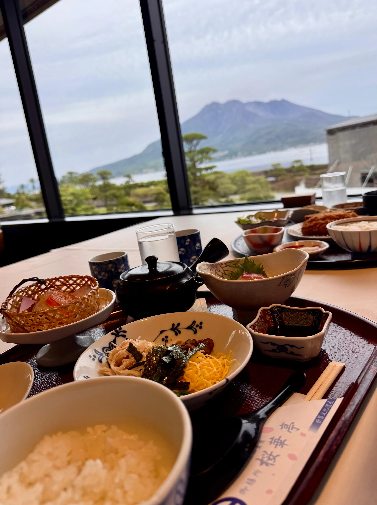
Als wir bezahlen, bedankt Mama sich freundlich auf Spanisch. Nein, das ist tatsächlich nicht das erste Mal, dass sie versehentlich Spanisch mit Japanern spricht. Wir sind immer noch nein bisschen durch.
Nach einer kleinen Pause im Hotel machen wir uns noch einmal auf den Weg in Richtung Einkaufszentrum am Bahnhof. Zum einen möchten wir schon einmal schauen, wie wir am nächsten Morgen dorthin kommen, schließlich geht es dann bereits weiter. Zum anderen ist Mama immer noch auf der Suche nach neuer Wolle.
Wir fragen mehrere Angestellte, wo wir so etwas finden können. Alle sind unglaublich freundlich und hilfsbereit, aber leider bleiben wir erfolglos.
Dafür finde ich neue Kleidung für meine kleinen Kerlchen, die natürlich jeden Tag mit auf unsere Abenteuer reisen. Sie scheinen sich allerdings ein kleines bisschen für ihr knallrotes Apfelkostüm zu schämen.
Mindestens genauso sehr freue ich mich aber über die Kleidung, die ich für mich selbst finde. Shoppen in Japan macht einfach unglaublich viel Spaß – vor allem, wenn mir beim Betreten eines Ladens nicht sofort jemand "Only one size!" entgegenruft.
Zurück im Hotel gönne ich mir noch einmal ein Bad mit meinem Erdbeer-Badezusatz. Nach einem langen Tag fühlt sich das inzwischen fast wie ein kleines Ritual an.
Dann heißt es auch schon Abschied nehmen von Kagoshima. Die Stadt mit ihren Palmen, dem rauchenden Vulkan und der entspannten Atmosphäre war der perfekte Start in unsere Reise durch Japan. Morgen geht es weiter nach Kumamoto.
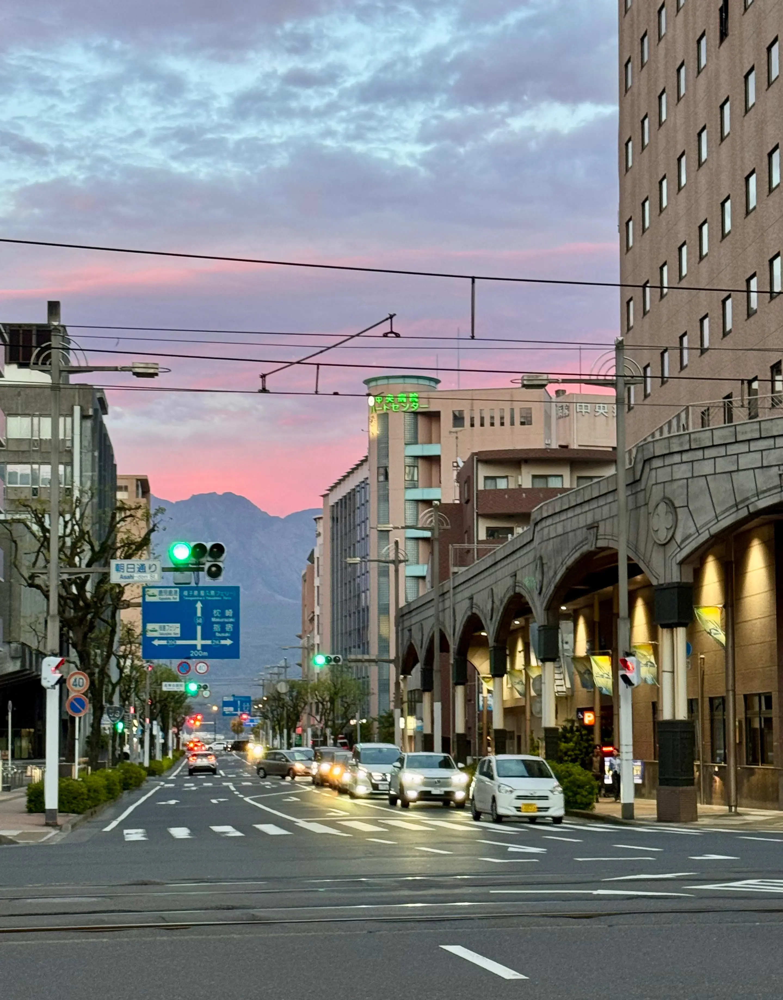